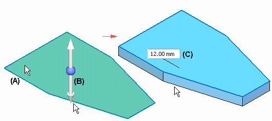
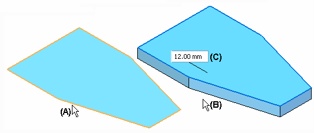
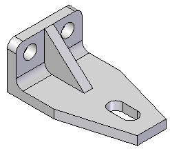
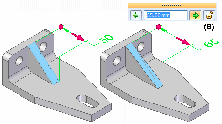
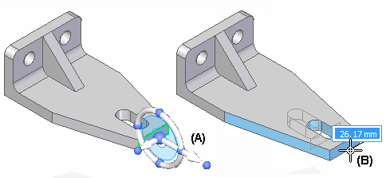

Part modeling workflow overview
You create parts in the Solid Edge synchronous environment by constructing a series of features that define the characteristics of the part.

The basic workflow for constructing a part in Solid Edge is:
-
Draw the first sketch
-
Construct a base feature using the sketch
-
Construct additional features
-
Edit the model to complete the part
Drawing the first sketch
Drawing a sketch allows you to define the basic size and shape of the part before you construct any features. Sketches consist of 2D geometric elements such as lines, arcs, circles, and rectangles. You can use dimensions and geometric relationships to control the size, shape, and position of the 2D elements.
You can draw sketches on the principal planes of a coordinate system, reference planes, or planar faces on the part.
The first sketch you draw must be a closed sketch region, and it is typically drawn on one of the three principal planes of the base coordinate system (A).

The commands for constructing sketches are found on both the Home and Sketching tabs on the ribbon.
To learn more:
Constructing the base feature
The first feature you construct is called the base feature. You select the sketch region you drew to construct the base feature.
Two methods are provided in Solid Edge for constructing the base feature: feature construction commands, or the Select tool. In either approach, the instructions in PromptBar guide you through the feature construction process.
-
Using the Select tool
You can use the Select tool to select a sketch region (A). The Extrude tool (B) is automatically displayed, which allows you to define the extent direction for an extruded feature. The dynamic input box (C) allows you to type a specific value for the feature thickness. Alternately, you can use the options on command bar to specify that you want to construct a revolved feature instead.

For constructing the base feature and subsequent features that add or remove material based on a sketch region, this method is the preferred approach.
-
Using feature-construction commands
You can also use a feature construction command, such as Extrude or Revolve Protrusion to define the base feature. You then select the sketch elements (A) you want to use to define the feature. You can use the cursor (B) to define the extent direction, and the dynamic input box (C) to type a specific value for the feature thickness. the command bar provides additional options and tools.

To learn more:
Constructing additional features
Subsequent features can be based on a sketch you draw, they can modify existing edges on the model, or they can be based on a set of properties you specify. For example, you can draw additional sketches, then use the Select tool to add or remove material, the Hole command to define counterbore or countersink hole features, or the Round command to round edges.

To learn more:
Modifying the model
An important part of model creation is the ability to modify a model easily and quickly. Solid Edge provides various tools to modify your models. For example, you can:
-
Edit 3D dimensions on model edges to change the size or shape of the model. If you want to maintain the value of the 3D dimension during subsequent edits, you can set the Lock option (B) on the value edit box.

-
Select a face(s) on the model, then use the steering wheel (A) to move the face in a direction and value you define (B), while maintaining the size and positional relationships of adjacent faces or features.

-
Define geometric relationships between faces on the model by using the Face Relate commands on the ribbon. For example, you can specify that a set of faces remain parallel when the model is modified.
To learn more, see Modifying synchronous models.
How do I
Construct a protrusion or cutout (ordered)Define the extent of an extruded feature
Construct a base feature
Construct a cutout (ordered)
Construct a hole
Construct a hole (ordered)
Construct a hole on a cylinder
Construct an extrusion: base feature
Construct an extrusion or cutout: subsequent features
Construct a protrusion or cutout: model face
Construct a Normal Protrusion
Construct a Normal Cutout (Part Environment)
Finish the Feature
Examples: Constructing Protrusions With the Finite Option
Examples: Constructing Protrusions With the Through All Option
Examples: Constructing Protrusions With the Through Next Option
Examples: Constructing Cutouts With the Through All Option
Examples: Constructing Cutouts With the Through Next Option
Examples: Constructing Cutouts With the Finite Option
Learn more
Part modeling: Tips for getting startedLook up more details
Extrude command (synchronous)Extrude command bar (synchronous)
Extrude command (ordered)
Extrude command bar (ordered)
Cut command
Cut command bar
Demo: Create protrusion or cutout using keypoint
Normal Protrusion command
Normal Protrusion command bar
Normal Cutout command (Part environment)
Normal Cutout command bar (Part environment)